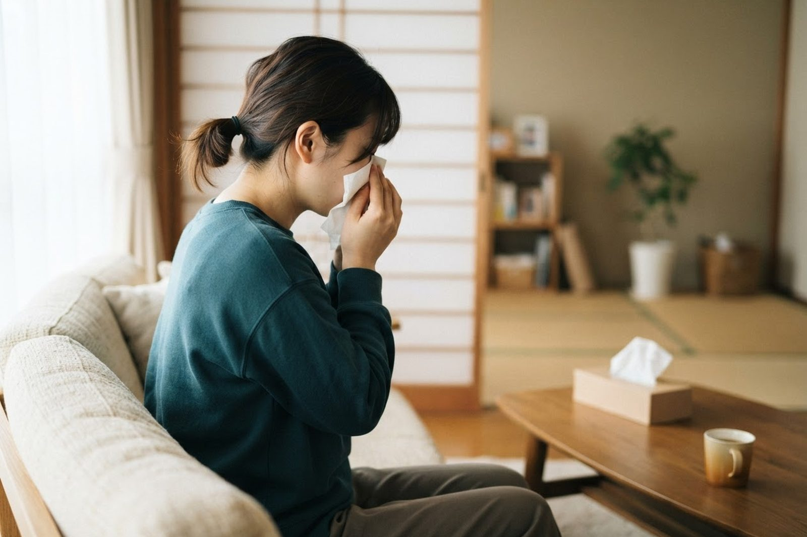

鼻水がのどに流れて咳が出ます。副鼻腔炎でしょうか？
A. 回答鼻水がのどの奥に流れ落ちる感じは「後鼻漏（こうびろう）」と呼ばれます。副鼻腔炎のほか、アレルギー性鼻炎やかぜのあとに残る鼻の炎症などが背景にある場合もあり、後鼻漏だけで副鼻腔炎と決まるわけではありません。ただし、のどに流れ込んだ分泌物が刺激となって咳や咳払いが続くことがあるとされており、長引く咳の原因のひとつとして知られています。咳が続いてつらい場合は、呼吸器内科・内科（当院でも対応しています）にご相談ください。

のどに流れる鼻水「後鼻漏」とは
鼻の分泌物は、健康な状態でも少しずつのどへ流れています。鼻やその奥にある副鼻腔（顔の骨の中にある空洞）に炎症が起きると分泌物が増えたり粘り気が強くなったりして、のどに流れる感覚をはっきり自覚するようになると考えられています。この状態が後鼻漏です。
こんな症状はありませんか？
- 鼻水がのどの奥に落ちてくる感じが続いている
- 咳払いをする回数が増えた、のどに何かが張りついている感じがする
- 横になったときや朝起きたときに咳き込む
- 鼻づまり、粘り気のある鼻水、においが分かりにくい
- ほおやおでこのあたりが重い、押すと痛い
後鼻漏や長引く咳の背景にある主な原因
後鼻漏の背景としては、次のようなものが挙げられています。ひとつではなく複数が重なっている場合もあるとされています。
- 急性副鼻腔炎：かぜなどの感染に続いて副鼻腔に炎症が起こり、色のついた鼻水や顔の痛み・圧迫感、鼻づまり、においの低下などがみられることがあるとされています。
- 慢性副鼻腔炎：炎症が長引いた状態で、鼻づまり、粘り気のある鼻水、頭重感、においが分かりにくいといった症状が続くことがあるとされています。
- アレルギー性鼻炎：花粉やハウスダストなどに反応して、くしゃみ・鼻水・鼻づまり・鼻のかゆみが起こり、後鼻漏を伴うことがあるとされています。
- かぜ（ウイルス性鼻炎）のあとの状態：感染そのものが治まったあとも、鼻水がのどに回る後鼻漏や咳が残ることがあるとされています。
- 咳のほかの原因が重なっている場合：咳喘息や胃食道逆流症など、鼻以外の原因が同時に関わっていることもあるといわれています。
急性の副鼻腔炎と慢性の副鼻腔炎
副鼻腔炎は、症状が続く期間によっておおまかに分けて考えられています。
| 項目 | 急性副鼻腔炎 | 慢性副鼻腔炎 |
|---|---|---|
| 期間の目安 | おおむね4週間以内に治まるもの | 12週間（約3か月）以上続くもの |
| きっかけ | かぜなどの感染に続いて起こることが多いとされています | 炎症が長引いたり、繰り返したりすることで移行するとされています |
| よくみられる症状 | 色のついた鼻水、顔の痛みや圧迫感、鼻づまり、発熱 | 鼻づまり、粘り気のある鼻水、頭重感、においが分かりにくい |
| 咳との関係 | 後鼻漏による咳が出ることがあるとされています | 咳や咳払いが長く続く原因になることがあるとされています |
なお、咳が3週間を超えて続く場合は、鼻の症状以外の原因も含めて調べたほうがよいとされています。
受診の目安
後鼻漏や咳の多くは経過をみられるものですが、次のような症状がある場合は対応を急いだほうがよいとされています。
判断に迷われるときは、救急安心センター事業「＃7119」（岡山県内で利用できます）にご相談いただけます。総務省消防庁の「全国版救急受診アプリ（Q助）」も目安になります。
すぐに受診を検討してください
- これまでにない強い頭痛がある
- 目の周りやまぶたが赤く腫れている、目が痛い
- ものが二重に見える、視力が落ちた感じがする、目が動かしにくい
- 高い熱が続いている
- ぼんやりして受け答えがはっきりしない、けいれんがある
これらは副鼻腔の周囲に炎症が広がる合併症の可能性が指摘されている症状です。夜間や休診時間帯の場合は、救急外来の受診や救急要請（119番）もご検討ください。
早めの受診をおすすめします
- 後鼻漏や咳が3週間以上続いている
- 色のついた鼻水や顔の痛み・圧迫感が1週間以上続いている
- いったん軽くなった症状が、また悪化してきた
- においが分かりにくい状態が続いている
- 夜間や早朝に咳き込んで眠れない
- 市販薬を使っても症状が変わらない
- ぜんそくやアレルギーの持病がある
当院での対応と検査
当院は内科・呼吸器内科・アレルギー科などを標榜しており、長引く咳のご相談を受けています。後鼻漏に伴う咳の場合、まず症状の経過や出やすい時間帯、鼻の症状の有無などをうかがい、聴診や必要に応じたレントゲン検査などで、咳のほかの原因が隠れていないかを含めて確認していきます。アレルギーが疑われる場合には、血液検査でのご相談も可能です。
副鼻腔の中を詳しく調べる検査や、鼻の手術など専門的な治療が必要と判断される場合には、耳鼻咽喉科の医療機関へご紹介いたします。「まず何科に行けばよいか分からない」という段階でも構いませんので、ご相談ください。
受診は予約制ではなく、診療時間内であれば当日受診いただけます（受付時間は公式ホームページをご確認ください）。診察や検査は保険診療の対象となります。費用について詳しくはお電話でお問い合わせください。受診の際は、保険証（マイナ保険証）と、お薬手帳や現在使用中の市販薬の情報をお持ちいただくと参考になります。発熱を伴う場合は、来院前に一度お電話でご連絡いただけると案内がスムーズです。
受診時に伝えていただきたいこと
- 後鼻漏や咳がいつから、どのくらい続いているか
- どんなときに強くなるか（横になったとき、朝方、季節など）
- 鼻水の色や粘り気、鼻づまり、においの変化があるか
- 発熱・顔の痛み・頭痛を伴うか
- これまでに副鼻腔炎やアレルギー、ぜんそくを指摘されたことがあるか
- すでに使っている市販薬や、他院で処方されているお薬
のどに流れる鼻水と咳が続いてつらいときは、いなだ医院までお気軽にご相談ください。
📞 086-525-0600最終更新：2026年8月26日